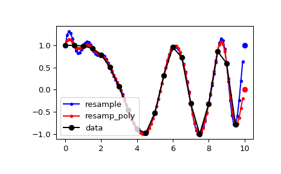
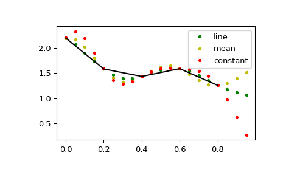
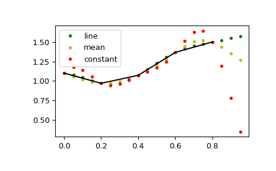

scipy.signal.resample_poly¶
-
scipy.signal.resample_poly(x, up, down, axis=0, window=('kaiser', 5.0), padtype='constant', cval=None)[source]¶ Resample x along the given axis using polyphase filtering.
The signal x is upsampled by the factor up, a zero-phase low-pass FIR filter is applied, and then it is downsampled by the factor down. The resulting sample rate is
up / downtimes the original sample rate. By default, values beyond the boundary of the signal are assumed to be zero during the filtering step.- Parameters
- xarray_like
The data to be resampled.
- upint
The upsampling factor.
- downint
The downsampling factor.
- axisint, optional
The axis of x that is resampled. Default is 0.
- windowstring, tuple, or array_like, optional
Desired window to use to design the low-pass filter, or the FIR filter coefficients to employ. See below for details.
- padtypestring, optional
constant, line, mean, median, maximum, minimum or any of the other signal extension modes supported by
scipy.signal.upfirdn. Changes assumptions on values beyond the boundary. If constant, assumed to be cval (default zero). If line assumed to continue a linear trend defined by the first and last points. mean, median, maximum and minimum work as in np.pad and assume that the values beyond the boundary are the mean, median, maximum or minimum respectively of the array along the axis.New in version 1.4.0.
- cvalfloat, optional
Value to use if padtype=’constant’. Default is zero.
New in version 1.4.0.
- Returns
- resampled_xarray
The resampled array.
See also
Notes
This polyphase method will likely be faster than the Fourier method in
scipy.signal.resamplewhen the number of samples is large and prime, or when the number of samples is large and up and down share a large greatest common denominator. The length of the FIR filter used will depend onmax(up, down) // gcd(up, down), and the number of operations during polyphase filtering will depend on the filter length and down (seescipy.signal.upfirdnfor details).The argument window specifies the FIR low-pass filter design.
If window is an array_like it is assumed to be the FIR filter coefficients. Note that the FIR filter is applied after the upsampling step, so it should be designed to operate on a signal at a sampling frequency higher than the original by a factor of up//gcd(up, down). This function’s output will be centered with respect to this array, so it is best to pass a symmetric filter with an odd number of samples if, as is usually the case, a zero-phase filter is desired.
For any other type of window, the functions
scipy.signal.get_windowandscipy.signal.firwinare called to generate the appropriate filter coefficients.The first sample of the returned vector is the same as the first sample of the input vector. The spacing between samples is changed from
dxtodx * down / float(up).Examples
By default, the end of the resampled data rises to meet the first sample of the next cycle for the FFT method, and gets closer to zero for the polyphase method:
>>> from scipy import signal
>>> x = np.linspace(0, 10, 20, endpoint=False) >>> y = np.cos(-x**2/6.0) >>> f_fft = signal.resample(y, 100) >>> f_poly = signal.resample_poly(y, 100, 20) >>> xnew = np.linspace(0, 10, 100, endpoint=False)
>>> import matplotlib.pyplot as plt >>> plt.plot(xnew, f_fft, 'b.-', xnew, f_poly, 'r.-') >>> plt.plot(x, y, 'ko-') >>> plt.plot(10, y[0], 'bo', 10, 0., 'ro') # boundaries >>> plt.legend(['resample', 'resamp_poly', 'data'], loc='best') >>> plt.show()
This default behaviour can be changed by using the padtype option:
>>> import numpy as np >>> from scipy import signal
>>> N = 5 >>> x = np.linspace(0, 1, N, endpoint=False) >>> y = 2 + x**2 - 1.7*np.sin(x) + .2*np.cos(11*x) >>> y2 = 1 + x**3 + 0.1*np.sin(x) + .1*np.cos(11*x) >>> Y = np.stack([y, y2], axis=-1) >>> up = 4 >>> xr = np.linspace(0, 1, N*up, endpoint=False)
>>> y2 = signal.resample_poly(Y, up, 1, padtype='constant') >>> y3 = signal.resample_poly(Y, up, 1, padtype='mean') >>> y4 = signal.resample_poly(Y, up, 1, padtype='line')
>>> import matplotlib.pyplot as plt >>> for i in [0,1]: ... plt.figure() ... plt.plot(xr, y4[:,i], 'g.', label='line') ... plt.plot(xr, y3[:,i], 'y.', label='mean') ... plt.plot(xr, y2[:,i], 'r.', label='constant') ... plt.plot(x, Y[:,i], 'k-') ... plt.legend() >>> plt.show()
